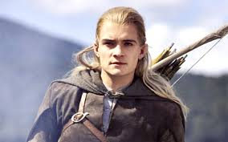
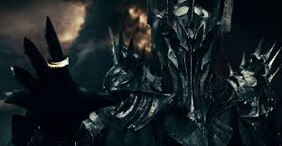

10: Gimli
Es el más poderoso, importante y socarrón de todos los personajes del reino de los enanos, además de ser uno de los 9 elegidos en la compañía del anillo.

9: Sam
Sam es como ese adolescente algo perdido, con carácter algo cobarde, acomodado en su aldea y sus amigos, que tendrá que asumir responsabilidades y aprender, sin su existencia o aparición, Frodo no existiría
8: Saruman
Es uno de los magos más importantes de la Tierra Media. Este es controlado por el gran Sauron y es un mago villano muy querido por los fans, por su personalidad y su fuerza.
7: Arwen
Es uno de los personajes femeninos más importantes, su delicadeza llega a ser algo elevada, y estaría bien que Tolkien hubiera potenciado algo más su aspecto de heroicidad, más que el de "joven" enamorada de Aragorn. Además es la hija del gran elfo Elrond tiene mucha importancia en la primera novela al igual que en la primera película.
6: Legolas
Es el único elfo que forma parte de los 9 miembros de la Comunidad del Anillo. Su personaje es atractivo por su físico, agilidad, manejo del arco y valentía. Y encima simpático y alegre casi siempre, sin ninguna duda, uno de los personajes más queridos por los fans.
5: Sauron
Inteligentemente Sauron es solo una presencia poderosa que siempre está ahí, a través de muchos otros esbirros menores que ponen en problemas a los héroes. Simplificándolo al máximo, Sauron es el malo malísimo de la saga que hay que eliminar.
4: Frodo
Es el personaje principal, de los 9 miembros del anillo, el es el elegido para llevar el anillo al Monte del Destino. Es un personaje muy noble y bondadoso pero a su vez en muchas ocasiones es algo temeroso.
3: Aragorn
Es el claro ejemplo de heroe en una película, Aragorn ejemplifica y representa grandes valores. Es un líder, un tipo al que seguir y apoyar en la batalla, en las buenas y las malas. Siempre va a estar ahí para defender a los suyos.
2: Gandalf
Sin Gandalf no habría historia, es así de sencillo, sin su ayuda los hobbits y su líder Frodo no tendrían las mismas motivaciones . Es un mago fiel, leal, noble y sobre todo sabio y da consejos y frases increibles cada vez que habla.
1: Gollum
Es el personaje más querido entre los fans debido a su personalidad, marginado, cobarde, refunfuñon y sobre todo solitario que solo deseaba proteger su "tesoroooooo" el cual cambia de poseedor en la película y sin este no sería posible.